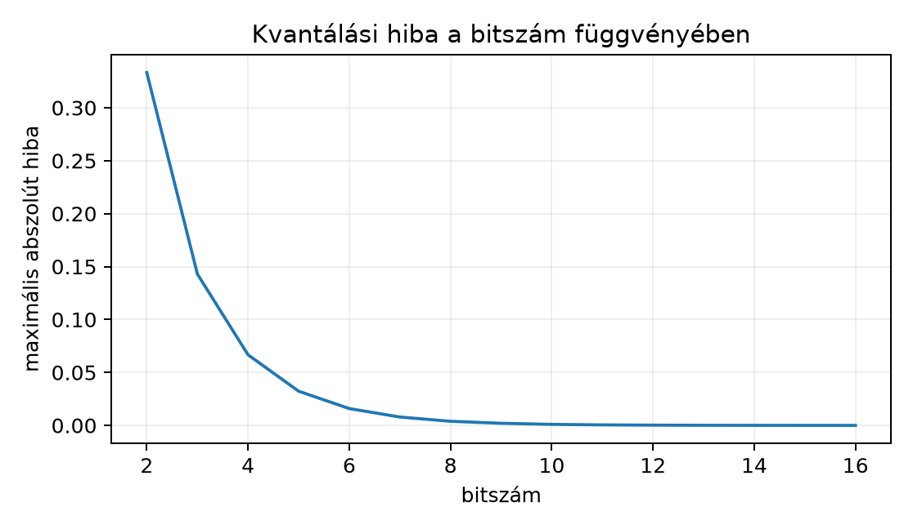

A Lebegőpontos számok és numerikus stabilitás
alfejezetben láttuk, hogy a lebegőpontos számábrázolás is véges
bitszámú, az A transformer-blokk teljes számítása és
költsége alfejezetben pedig azt, hogy egy nagy nyelvi modell súlya
és KV-cache jelentős memóriát foglal. A kvantálás (quantization) ezt a
memóriát csökkenti azzal, hogy a valós súlyokat és aktivációkat néhány
bites egészekre cseréli. Lineáris algebrai szempontból ez mindössze egy
skálázás és egy eltolás, majd kerekítés. A kérdés az, mekkora hibát visz
ez a mátrixszorzásokba.
23.2.1 Szemléletes kép
Képzeljük el, hogy egy analóg hőmérő megfigyelt értékeit digitális
kijelzőre kell áttenni: a teljes mérési tartományt felosztjuk egyenlő
lépcsőkre. A kvantálás ugyanez: a valós számegyenes egy intervallumát
darab egész szintre képezzük le. A skála a lépcsők szélessége, a
nullpont pedig ahhoz kell, hogy az intervallum ne a nullából induljon,
hanem a megfigyelt minimumhoz igazodjon. Így a kvantálás affin
leképezés: lineáris skálázás plusz eltolás.
23.2.2 Definíció
Definíció. (Affin kvantálás.) Legyen adott
bites előjeles egész tartomány
,
például int8 esetén
,
.
Egy valós
érték kvantált egész értéke:
ahol
a skála (scale),
a nullpont (zero point),
a legközelebbi egészre kerekítés,
pedig a
tartományra korlátozás. A rekonstrukció:
Ha az intervallum
,
akkor a skála és a nullpont:
Szimmetrikus kvantálásnál
,
így
a
szintre kerül; a skálát a maximális abszolút értékhez igazítjuk,
.
Aszimmetrikus kvantálásnál
,
ezzel a nullától eltolt intervallumot is jobban lefedhetjük, például
ReLU-aktivációknál.
23.2.3 Kidolgozott példa
Kvantáljuk aszimmetrikusan int8-ra a
vektort. Az értékek minimuma
,
maximuma
,
a tartományszélesség
.
int8 esetén
,
,
így a nevező
.
A skála:
A nullpont:
Ezután minden elemre kiszámítjuk a
értéket:
A rekonstruált vektor:
ahol az értékek négy tizedesjegyre kerekítettek. A maximális abszolút
hiba:
ami kisebb, mint az elméleti
korlát.
23.2.4 Indoklás: hibaterjedés a
skalárszorzatban
A kvantálás lényegében kerekítés, tehát a rekonstruált vektor
,
ahol
az elemenként
-nél
nem nagyobb kerekítési hibákból áll. A skalárszorzat hibáját a következő
állítás becsli.
Állítás. Legyenek
,
kvantált hibáik
,
.
Ekkor
Bizonyítás. A kvantált skalárszorzatot
kifejtjük:
Kivonva
-t
és abszolút értéket véve, a három hibás tag abszolút értékét
Cauchy–Schwarz-egyenlőtlenséggel becsüljük: például
.
Innen a formula közvetlenül adódik. Ha elemenként
,
akkor
,
tehát a hibakorlát a dimenzió négyzetgyökével arányos tényezőt
tartalmaz.
A mátrixszorzás esetén ugyanez az elv működik. Legyenek az int8-ra
kvantált mátrixok
és
,
ahol
csupa egyes mátrix. A szorzatuk:
Szimmetrikus kvantálásnál
,
így csak
szorzat marad. Aszimmetrikus esetben a nullpontos tagokat is egész
számokkal tudjuk számolni; a
mátrix minden sorában a
oszlopösszegeit ismétli, ezt elő lehet számolni.
A
elemeit int32-ben halmozzuk fel. Két int8 szám szorzatának abszolút
értéke legfeljebb
.
Ha a közös dimenzió
,
akkor az összeg abszolút értéke legfeljebb
.
Például
esetén ez
,
azaz körülbelül
millió, ami bőven belefér az int32 tartományába (max
).
A visszaskálázás
-vel
utána történik.
23.2.5 Miért baj a kiugró
dimenzió?
Ha egy teljes tenzorra egyetlen skálát számolunk, akkor a legnagyobb
abszolút érték határozza meg a lépésközt. Ha egyetlen kiugró elem van, a
kis elemek relatív hibája megnő. Például szimmetrikus int8 kvantálásnál
a
vektor esetén a skála
.
A
elem kvantálása:
tehát a rekonstruált érték
,
az abszolút hiba
,
a relatív hiba
.
Egy vektoron belül ezen nem segít semmilyen közös skála. Egy mátrixban
viszont, ha a kiugró érték csak egyes sorokban (vagy oszlopokban) fordul
elő, a soronkénti (per-row) vagy csatornánkénti (per-channel) skála a
többi sornak sokkal kisebb lépésközt enged, és ott a relatív hiba
drasztikusan csökken. Ezért a gyakorlatban tenzorszintű (per-tensor)
helyett gyakran csatornánkénti vagy soronkénti skálázást alkalmaznak.
Nagy nyelvi modellek aktivációiban Dettmers és munkatársai
(LLM.int8(), 2022) néhány olyan jellemződimenziót (oszlopot)
figyeltek meg, amelyben rendszeresen nagy kiugró értékek jelennek meg;
módszerük ezeket a dimenziókat külön, 16 bites pontossággal szorozza, a
többit int8-ban (ellenőrzési igénnyel).
23.2.6 Hibagörbe

Kvantálási hiba a bitszám függvényében -
Számított értékek: a maximális kerekítési hiba s/2 = 1/(2^b-1), ha a
tartomány (-1,1).
A görbe azt mutatja, hogy a maximális kerekítési hiba
szerint csökken, ha a kvantálandó tartomány rögzített
.
Például
bitnél a hiba körülbelül
,
bitnél viszont már
.
A lineáris tengelyen a görbe eleinte meredeken esik, majd ellaposodik;
logaritmikus tengelyen közel lineáris lenne.
A scale és a zero_point egyezik a kézi
számítással, a max_abs_error pedig kisebb, mint
.
23.2.8 Kapcsolat a gépi
tanulással
Egy transformer-ben a dense rétegek dominálják a paraméterszámot.
Legyen a bemeneti aktiváció
és a súlymátrix
.
A réteg kimenete
.
Kvantálás után
-ből
int8-as
,
-ből
int8-as
lesz. Szimmetrikus esetben a mátrixszorzást int32 felhalmozással
végezzük:
Ha per-channel kvantálást használunk, akkor a súlymátrix minden
kimeneti sorához külön
skála tartozik; ekkor a visszaskálázás egy jobbról szorzó diagonális
mátrixszal írható le:
.
Ez olcsó, mert a skála az egész szorzat után alkalmazható. Az aktivációk
tengelye menti (oszloponkénti) skála viszont az összegzés tengelyén
változna, így nem emelhető ki a szorzatból; ezért az aktivációkat
gyakran tenzorszinten vagy tokenenként (soronként) kvantálják. Éppen
ezért okoznak gondot az aktivációk kiugró dimenziói.
A bemutatott int8 kvantálás klasszikus leírása Jacob et al.,
Quantization and Training of Neural Networks for Efficient
Integer-Arithmetic-Only Inference, 2018. A konkrét int4/int8
konfigurációk és keretrendszer-alapértelmezések gyorsan változnak, ezért
azok nem tekinthetők ellenőrzött, hosszú távon állandó ténynek.
23.2.9 Tipikus hibák és
félreértések
A kerekítés és a csonkítás összekeverése. A
kvantálásnál a round a legközelebbi egészre kerekít, nem
pedig floor vagy trunc. Ha csonkítanánk, a
maximális hiba
,
nem
lenne, tehát kétszer nagyobb.
Azt gondolni, hogy a dequantization nulla hibát ad.
A
csak akkor adná vissza az eredeti értéket, ha
pontosan egész lenne; általában a kerekítés miatt hibát kapunk. Éppen
ezért a kvantálási hibát folyamatosan ellenőrizni kell.
A clamp hatásának elhanyagolása. Ha egy érték kívül
esik a kiválasztott intervallumon, a clamp telítésbe viszi,
és a hiba sokkal nagyobb lehet, mint
.
Ezért a skálát úgy kell választani, hogy a fontos értékek a tartományon
belül maradjanak.
Az int32 felhalmozás elfelejtése. Két int8 szám
szorzata is meghaladhatja az int8 tartományt, ezért a mátrixszorzat
felhalmozását int32-ben kell végezni, különben túlcsordulás lép
fel.
23.2.10 Feladatok
Fogalmi kérdés. Mi a nullpont szerepe az
aszimmetrikus kvantálásban? Miért hasznos, ha az adatok eloszlása nem
nullára szimmetrikus?
Kézi számolás. Kvantálja aszimmetrikusan a
vektort 2 bites előjeles egész tartományra,
,
.
Adja meg
-t,
-t,
-t,
-t
és a maximális abszolút hibát.
NumPy-feladat. Írjon rövid NumPy-kódot, amely a 2
bites aszimmetrikus kvantálást reprodukálja, és ellenőrzi, hogy a
maximális hiba kisebb vagy egyenlő, mint
.
Alkalmazási feladat. Legyen
szimmetrikus int8 kvantálással. Számítsa ki a
elem relatív hibáját, és magyarázza el, miért segít a soronkénti
(per-row) vagy csatornánkénti skálázás, ha a mátrixban ilyen kiugró
sorok vannak.
23.2.11 Megoldások
Az aszimmetrikus kvantálásnál a nullpont a valós nulla helyét adja
meg az egész skálán. Ha az adatok például nemnegatív ReLU-aktivációk,
akkor a nullpont segítségével a teljes egész tartományt kihasználhatjuk,
nem pedig a nulla körül szimmetrikusan pazaroljuk el a lépcsőket.
,
,
a tartományszélesség
.
A skála
.
A nullpont
.
A kvantált értékek:
,
.
A rekonstrukció
.
A maximális abszolút hiba
,
ami kisebb, mint
.
A NumPy-kód hasonló a fentihez, de
,
értékekkel. Az ellenőrzéshez a
np.max(np.abs(v - v_hat)) <= scale/2 összehasonlítást
kell kiíratni, ami True lesz.
Szimmetrikus int8 kvantálásnál
.
A
elem kvantált értéke
,
a rekonstrukció
,
a relatív hiba
.
Ha soronkénti skálázást használunk, akkor a
értékeket tartalmazó sorhoz kisebb skálát választhatunk, így azok
pontosabban ábrázolhatók; a kiugró
értéket tartalmazó sorhoz külön skála tartozik.
23.2.12 Rövid összefoglaló
A kvantálás affin leképezés: egy valós
-ből
egész lesz, a rekonstrukció
.
A skála és a nullpont a megfigyelt intervallumot képezi le az egész
tartományra; szimmetrikus esetben
,
aszimmetrikus esetben nem. A maximális kerekítési hiba elemenként
,
ha nincs telítés. A skalárszorzat hibája a dimenzió négyzetgyökével
skálázódik, és kiugró elemek hatására a közös skála a kis elemek relatív
hibáját megnövelheti. int8 mátrixszorzásnál az egész mátrixok szorzatát
int32-ben halmozzuk, majd
-vel
visszaskálázzuk.
Kvantálás:
.
Rekonstrukció:
.
Hibabecslés:
telítés nélkül; skalárszorzatban
szerint terjed.
23.2.13 Források és ellenőrzési
hiányok
A bemutatott int8 kvantálás klasszikus leírása: B. Jacob, S. Kligys,
B. Chen, M. Zhu, M. Tang, A. Howard, H. Adam, D. Kalenichenko,
Quantization and Training of Neural Networks for Efficient
Integer-Arithmetic-Only Inference, CVPR 2018. A fenti matematikai
képletek a definícióból közvetlenül levezethetők. A konkrét ipari
kvantálási eszközök int4/int8 konfigurációi és per-channel
alapértelmezései verziófüggők, ezért azokat nem rögzítettük ellenőrzött
tényként.